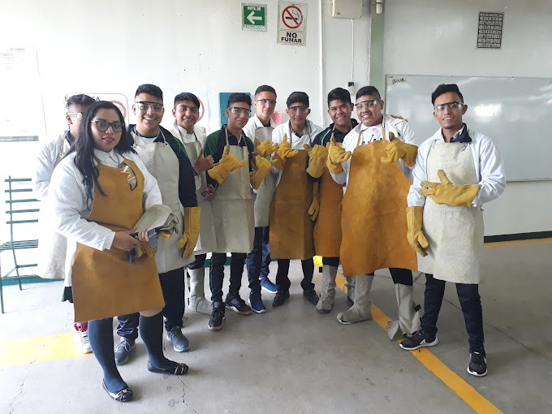
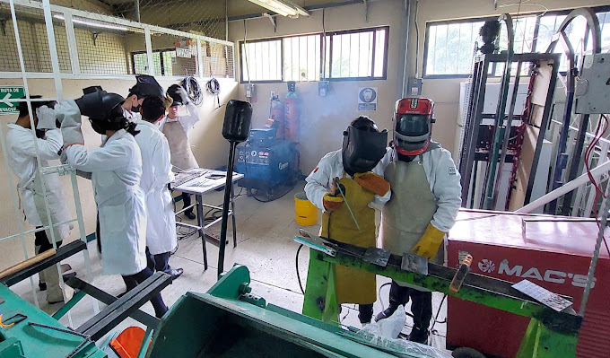
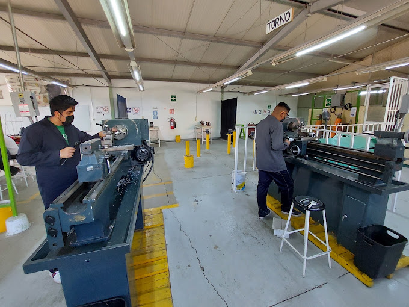
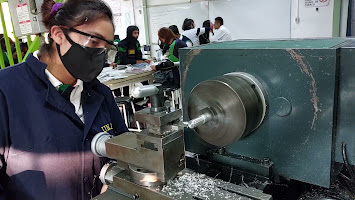

Técnico en Mantenimiento Industrial
El Técnico en Mantenimiento Industrial en el CECyTE de México Plantel La Paz está diseñado para aquellos interesados en adquirir conocimientos y habilidades necesarias para asegurar el correcto funcionamiento de maquinarias, equipos y sistemas industriales. Este programa se enfoca en el desarrollo de competencias técnicas en áreas como electrónica, mecánica, electricidad y automatización.
Los estudiantes aprenderán a diagnosticar fallas, planear, coordinar y realizar reparaciones en maquinarias y equipos de producción. Además, se familiarizarán con herramientas y técnicas de mantenimiento preventivo para mantener las instalaciones industriales en óptimas condiciones y garantizar la seguridad en el trabajo.
Al graduarse, los egresados estarán preparados para desempeñarse en sectores como la producción de alimentos, bebidas y la fabricación de componentes electrónicos, entre otros, con oportunidades tanto en empresas privadas como en el sector público.
Perfil de Ingreso

El perfil de ingreso para este programa incluye a personas con educación media superior completa e inclinación hacia áreas como mecánica, electrónica, electricidad y automatización industrial. También es importante la capacidad para trabajar en equipo, resolver problemas y manejar información técnica.
Perfil de Egreso

Los egresados tendrán habilidades técnicas en la reparación y mantenimiento de maquinaria industrial, estarán capacitados en seguridad industrial, y podrán diseñar planes de mantenimiento preventivo y correctivo. Serán capaces de liderar equipos y supervisar tareas de mantenimiento.
Habilidades a Desarrollar

Los estudiantes desarrollarán habilidades en diagnóstico, solución de problemas técnicos y mantenimiento preventivo y correctivo. También aprenderán a interpretar planos técnicos y realizar la planificación de tareas de mantenimiento.
Campo Laboral

Los técnicos en mantenimiento industrial tienen un campo laboral amplio en sectores como la industria alimentaria, automotriz y química. Podrán trabajar tanto en empresas privadas como públicas o ejercer como profesionales independientes, ofreciendo servicios de mantenimiento y reparación.